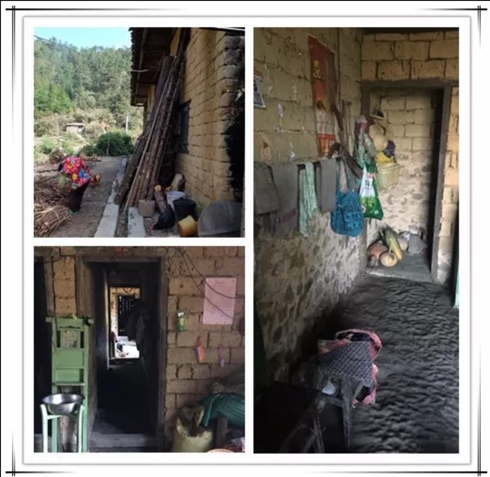
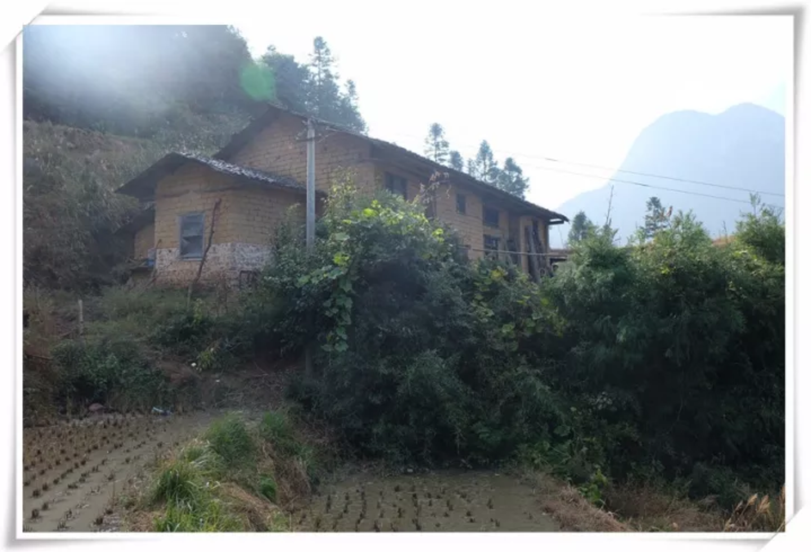
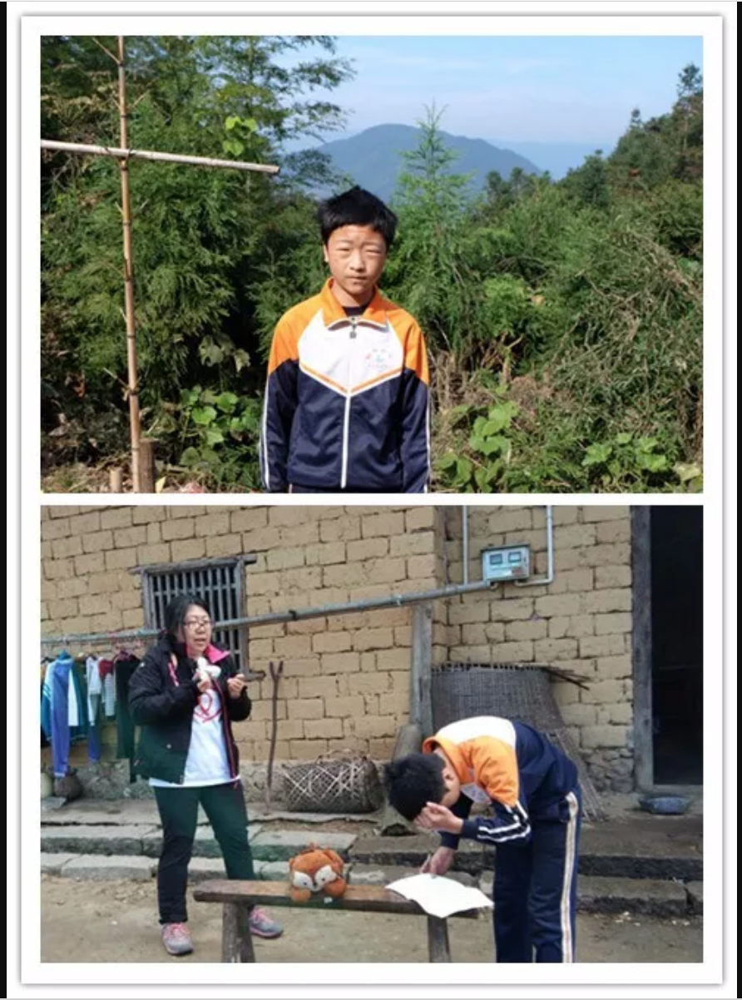
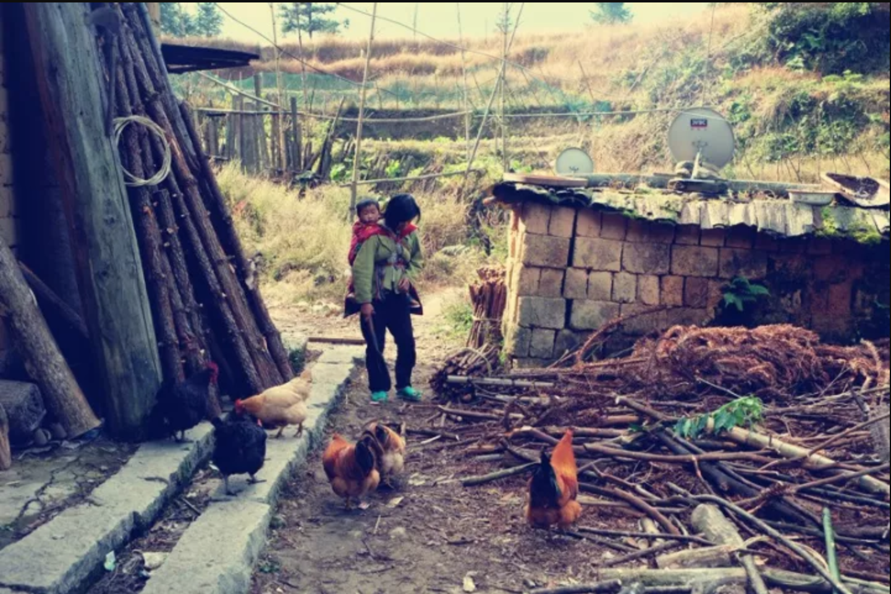

这样的土坯房和院落在江西遂川的大坑村很少见了。
我们一行志愿者来到村里做调查，看到此景，仿佛时光倒流五十年。
小威一家就住在这里，是村里重点扶贫对象。他家五口人，爸爸没固定工作，偶尔上山伐木打些零工挣钱；妈妈一只眼是瞎的，在家待着。小威还有两个弟弟，一个四岁，一个在襁褓中。


小威今年上五年级了，平日里住校，周五下午回家，周日中午返校。 学校离家远，单程要走两个多小时的山路，遇到风雨天，路上更是危险。 小威回到家不仅要和爸爸一起上山伐木，还要做家务活，照顾弟弟。 他对我们透露，他的学习成绩不算好，如果能坚持到小学毕业，想到外地打工挣钱。